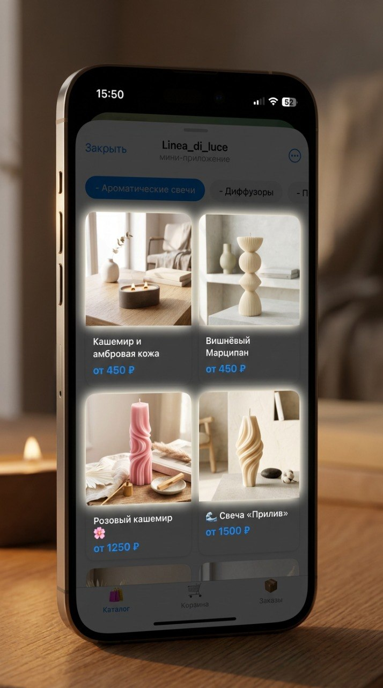
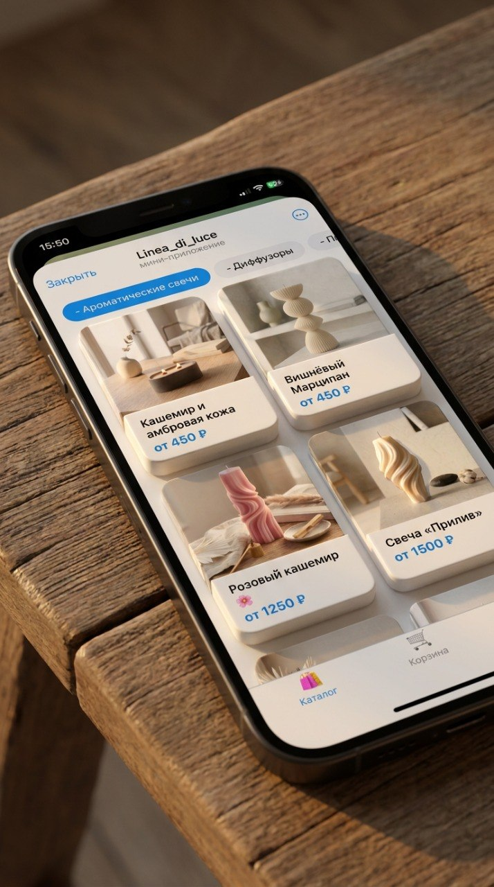
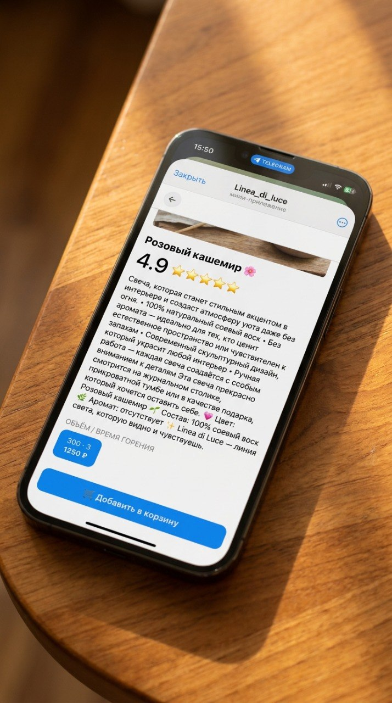
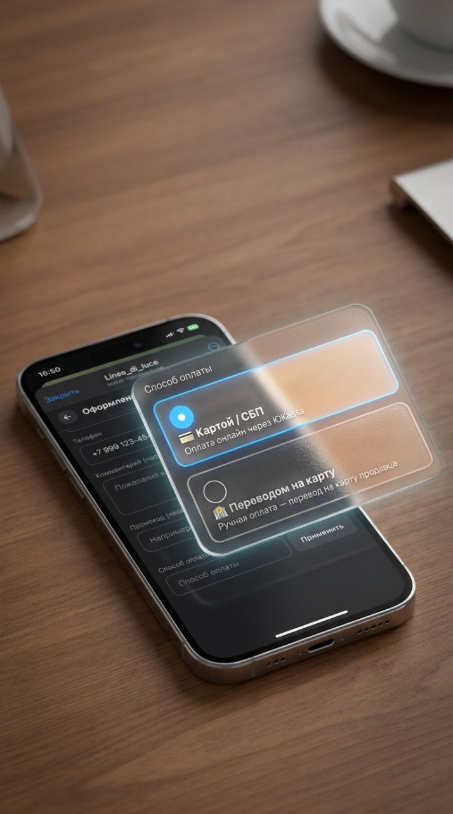
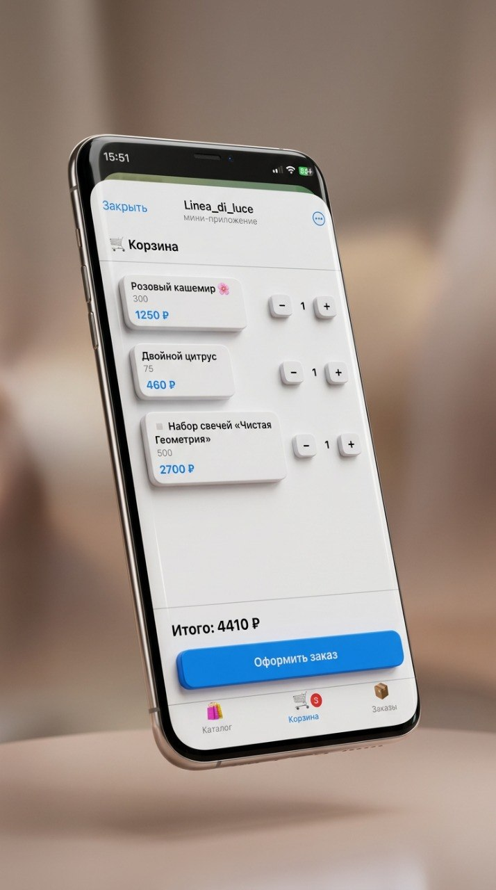
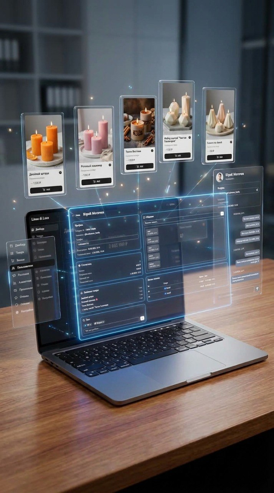
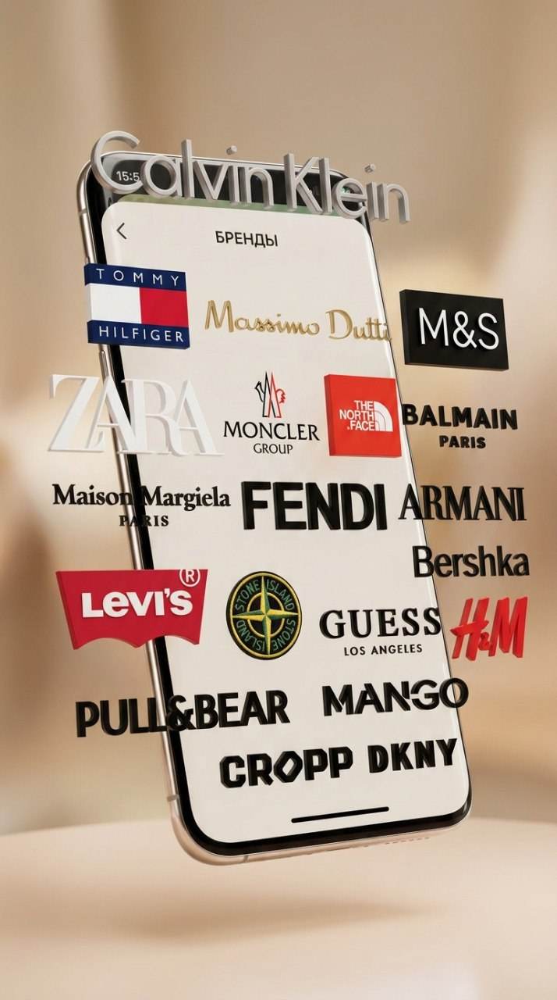
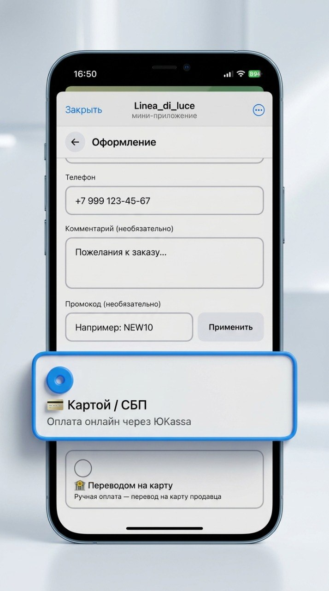
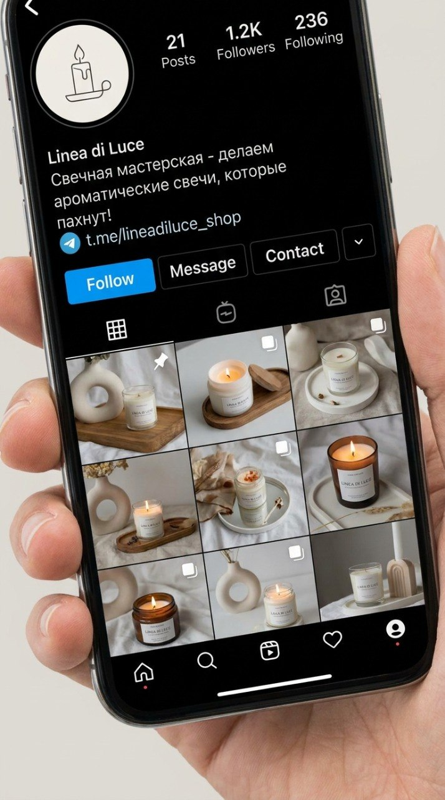

Заказ теряется в переписке
«Напишите в директ для заказа» — и дальше: какой вариант, сколько, куда отправлять, пришла ли оплата. Пока вы переписываетесь, покупатель уходит к тому, у кого быстрее.
«Свой канал» превращает твой Telegram-канал в магазин: каталог, корзина, оплата и база клиентов — прямо в боте. Без сайта. Без переписки. Без потерянных заказов.

«Напишите в директ для заказа» — и дальше: какой вариант, сколько, куда отправлять, пришла ли оплата. Пока вы переписываетесь, покупатель уходит к тому, у кого быстрее.
У тебя 5 000 подписчиков, но ты не помнишь, кто уже покупал, кто вернулся за повторным заказом, а кто просто читает. Канал не даёт данных о покупателях — и база не ведётся.
Каждый новый заказ — с нуля. Ты не можешь написать тем, кто покупал в прошлом месяце, и предложить новинку. Рассылка по реальным покупателям невозможна.
Никаких внешних ссылок, регистраций на сайте или возвратов в директ. Три шага — и заказ оплачен.

Покупатель запускает бота прямо из твоего канала. Видит разделы и товары с фото, ценами и описаниями — как в интернет-магазине, только внутри Telegram.

Жмёт «В корзину» прямо под товаром. Бот сам считает сумму и количество. Покупатель видит корзину и нажимает «Оформить» — без переписки с тобой.

Выбирает способ оплаты — карта через ЮKassa или перевод. Деньги идут тебе. Заказ автоматически появляется в твоей админ-панели со статусом «Оплачен».

Покупатель листает каталог, добавляет в корзину и оплачивает — прямо в чате с ботом. Не нужно переходить на сторонний сайт, регистрироваться или писать продавцу лично.

Каждый покупатель автоматически попадает в базу: профиль, теги, история заказов. Отправляй рассылки по сегментам, предлагай новинки тем, кто уже покупал — канал сам по себе такого не даёт.

Бот работает под твоим именем: твоё название, твоё описание, твоё лого. Никаких упоминаний платформы — покупатель видит только твой магазин.
Админ-панель для управления каталогом, ценами, промокодами и заказами. Добавляешь товары, нажимаешь «Опубликовать» — изменения появляются в боте мгновенно. Ни одной строчки кода.

ЮKassa для онлайн-оплаты картой или перевод на карту с авто-подтверждением. Деньги идут тебе напрямую. Покупатель не покидает Telegram — и не передумывает.
«Пишите в директ» работает одинаково плохо и там, и там. Поставь ссылку на бота в профиль или сторис — и подписчики из Instagram оформляют заказ за минуту, без единого сообщения тебе лично.

Ты делаешь четыре шага. На четвёртом магазин уже работает.
Открой @BotFather в Telegram, отправь команду /newbot, придумай имя и юзернейм. Получишь токен — это ключ от твоего магазина.
Открой @svoi_kanal_bot, пройди регистрацию и вставь токен. Бот готов принимать заказы.
В админ-панели добавь товары: название, цена, фото, описание. По одному или массовым импортом. Нажми «Опубликовать» — каталог появляется в боте.
Закрепи ссылку на бота в канале. Подписчики открывают, выбирают, оплачивают — ты видишь заказы в админ-панели. Магазин работает.
Нет. Ты создаёшь бота через @BotFather — это официальный инструмент Telegram, займёт 2 минуты. Затем вставляешь токен в платформу, и магазин готов. Каталог и заказы настраиваются в админ-панели мышкой, без единой строчки кода.
Первые 7 дней — бесплатно, без привязки карты. Дальше действует подписка, тарифы можно посмотреть у бота при регистрации. Никаких комиссий с каждой продажи — ты получаешь всю сумму заказа.
Два способа: ЮKassa для онлайн-оплаты картой прямо в боте или перевод на карту с автоматическим подтверждением. В обоих случаях покупатель не покидает Telegram.
Да. Канал остаётся точно таким же — те же посты, те же подписчики, тот же контент. Ты просто добавляешь ссылку на бота в закреплённое сообщение или посты, и подписчики оформляют заказы через бота вместо переписки в директе.
Да. Загружаешь товары в админ-панели: название, цена, фото, описание. Поддерживается массовый импорт. Если у тебя десятки позиций — добавление займёт несколько минут.
Доставку ты организуешь так же, как делаешь сейчас. Платформа обрабатывает заказы и платежи, а логистика остаётся за тобой — мы не вмешиваемся в этот процесс.
Платформа в активной разработке. Первые пользователи получают:
Подключи магазин к своему каналу. На это уйдёт 5 минут — а каждый следующий подписчик сможет купить без единого сообщения в директ.
Создать магазин за 5 минут 7 дней бесплатно · без привязки карты